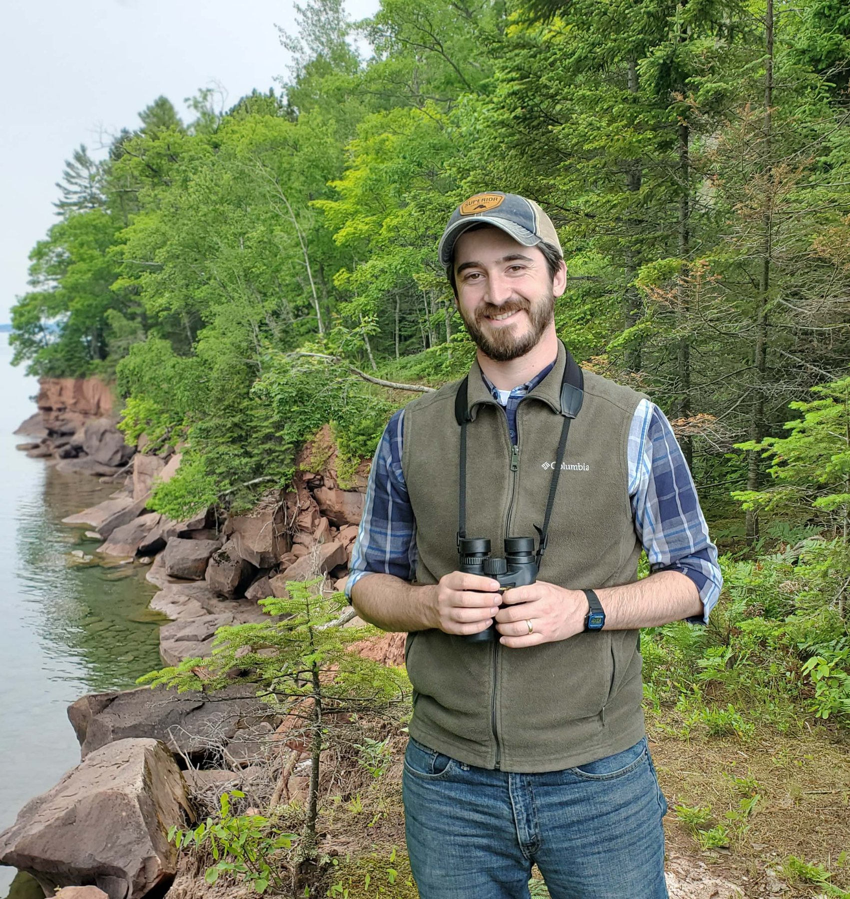

Kevin F. P. Bennett
I am an evolutionary biologist investigating proximate and ultimate mechanisms behind the evolution of sexual signals in birds and how those signals contribute to diversification. My research program uses integrative methods to identify the genetic, molecular, chemical, and physical basis of sexual traits, as well as field observations to study sexual selection in the wild. Museum collections are a major component of my research. I am currently a postdoc at Penn State University working on phylogenomics, gene flow, and plumage coloration of New World warblers. For more details about my previous and current work, see the Research tab.